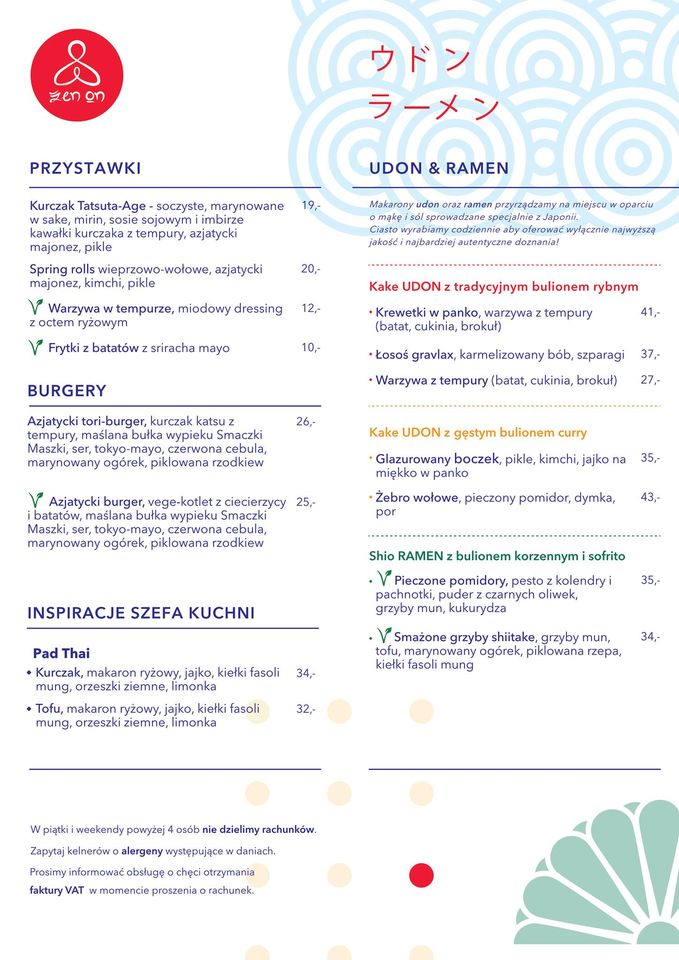
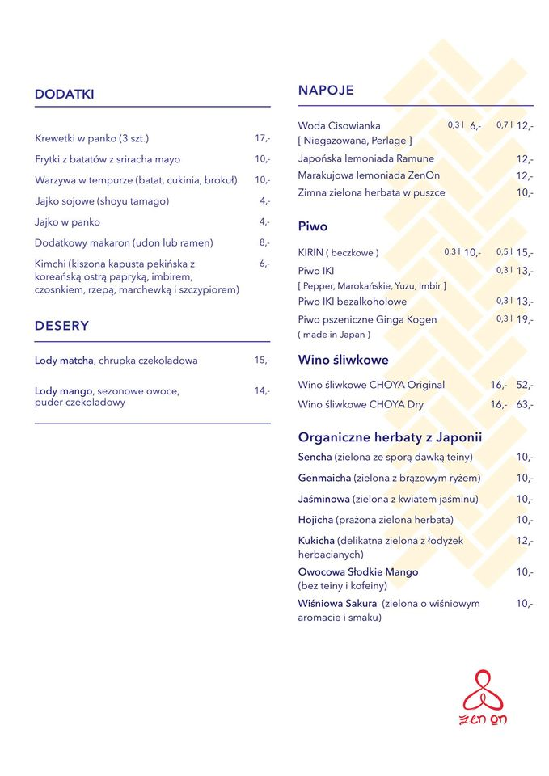

Ręcznie robione, japońskie makarony UDON oraz RAMEN w oparciu o mąkę i sól sprowadzane z kraju samurajów. Ciasto wyrabiamy codziennie aby oferować wyłącznie najwyższą jakość i najbardziej autentyczne doznania. Jedyne takie miejsce w Poznaniu!
Jeżeli lubisz RAMEN to pokochasz UDON!
Menu
Główne Menu
Napoje


The Main Reason
There’s a subtle reason that programmers always want to throw away the code and start over.
I shall sing that first line twice, and perhaps if I sing it very quickly, I shall find myself singing the third and fourth lines before I have time to think of them, and that will be a Good Song. You cannot not communicate.